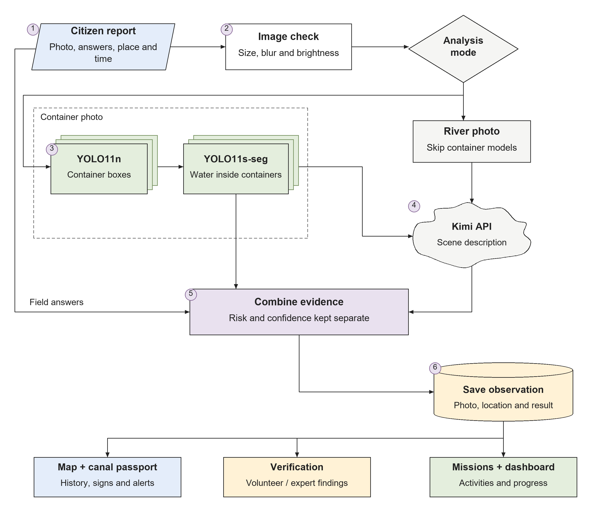
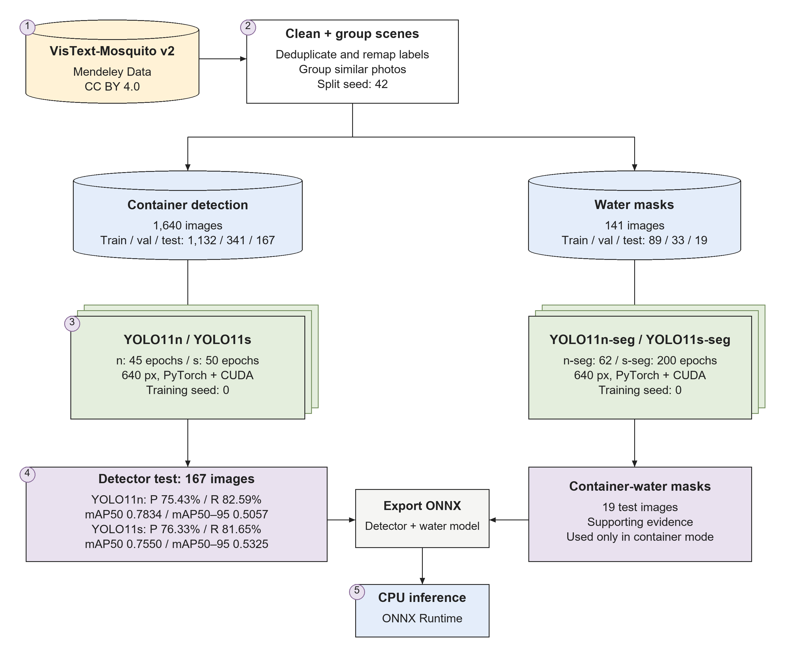
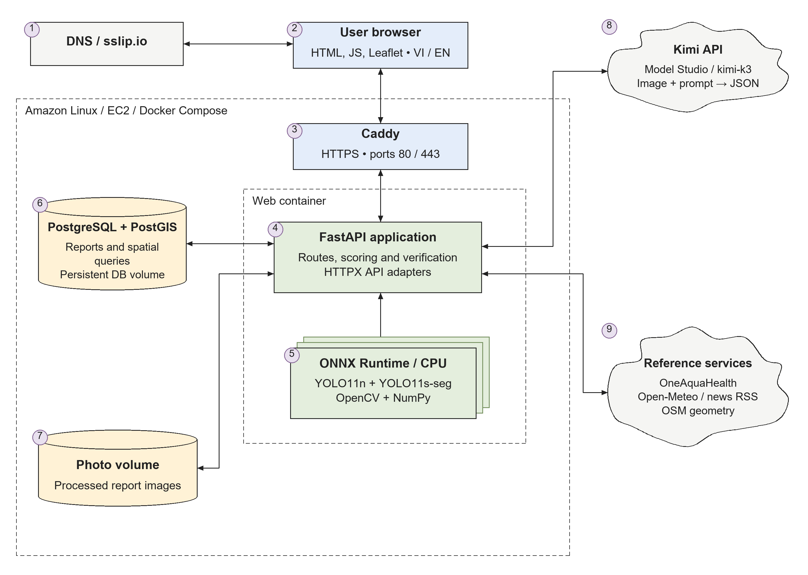

<!doctype html><html lang="en"><meta charset="utf-8"><meta name="viewport" content="width=device-width,initial-scale=1"><title>AquaPulse figures</title><style>body{font:14px Arial;margin:24px;background:white;color:#222}main{max-width:1120px;margin:auto}article{margin:32px 0 60px}img{display:block;width:100%;height:auto}nav{margin-bottom:14px}a{color:#355477}</style><main><article><nav>1. <a href="01-observation-pipeline.png">PNG</a> / <a href="01-observation-pipeline.svg">SVG</a></nav></article><article><nav>2. <a href="02-training-and-evaluation.png">PNG</a> / <a href="02-training-and-evaluation.svg">SVG</a></nav></article><article><nav>3. <a href="03-system-architecture.png">PNG</a> / <a href="03-system-architecture.svg">SVG</a></nav></article><article><nav>4. <a href="04-evidence-and-verification.png">PNG</a> / <a href="04-evidence-and-verification.svg">SVG</a></nav></article></main></html>